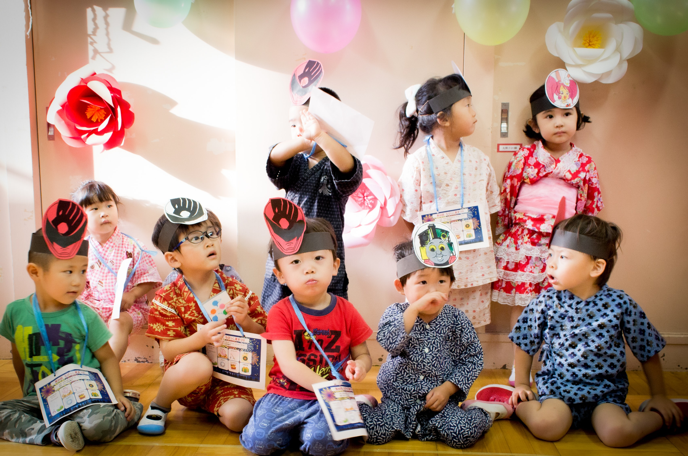

사실 초등학교 전 기억은 잘 나지 않는다. 그래서 어린이집, 유치원 이렇게 세부적으로 시기를 나누지 않고 "초등학교 전"이라고 통칭하였다.

한 가지 기억나는 것은 4살 때 학예회를 하다가 울었던 것이다.
그 당시, 한복을 입고 친구들과 같이 춤을 췄는데 보해의 독무 파트가 있었다.
친구들이 쪼그려 앉아 길 모양을 만들어주면 그 길을 지나가면서 친구들에게 말을 거는 시늉을 하는 춤이었다.
중간 쯤 까지는 잘하다가 갑자기 울음을 터뜨려서 학예회가 웃음바다가 되었다.
그 당시 보해는 많이 부끄럽고 무서웠나보다.
모두가 웃었던 그 때, 보해의 부모님은 보해의 마음을 진심으로 어루만져주며 용기를 주었고 그에 힘입어 보해는 무대를 무사히 마무리하였다.